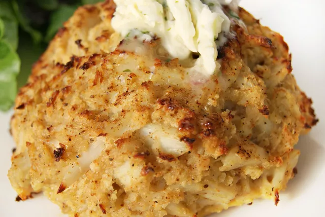

Crab Cakes

Description
These Kent Island Crab Cakes with Tarragon Shallot Butter are not your
typical crab cake—they’re much better. They're packed with sweet jumbo
lump Maryland crab meat and topped with a rich tarragon butter that melts
down into every little bite. The best part, however, is that they contain
absolutely no mayo or mustard!
Ingredients
For the Crabcakes
- 16 ounces lump crab meat
- 2 eggs whisked
- 1 cup panko
- 1 lemon juiced
- 1/3 cup plain Greek yogurt
- 1 pinch ground black pepper
- 1/2 teaspoon Old Bay Seasoning
For the Butter
- 2 sprigs fresh tarragon, chopped
- 1 large shallot, minced
- 1/2 lemon juiced
- 1/2 cup salted butter, room temperature
Directions
For the Crabcakes
- Preheat your oven to 425° F.
-
In a large mixing bowl, carefully combine all ingredients (it’s best
to use your hands). You only want to mix the ingredients until the
crab meat is well incorporated. Don’t over-mix or the crab meat will
fall apart!
- Using your hands, form 6 equally-sized crab cakes.
-
Line a baking sheet with foil and spray it with cooking oil.
Transfer the crab cakes to the sheet.
- Sprinkle the crab cakes with additional Old Bay Seasoning.
-
Bake the crab cakes for 15 minutes. Then, turn the oven to broil and
continue to cook until the crab cakes are lightly golden brown on top.
For the Butter
-
In a food processor, combine all ingredients and mix until the
tarragon, shallots, and lemon juice are all evenly incorporated
throughout the butter.
- Store in the refrigerator to chill prior to serving with crab cakes.